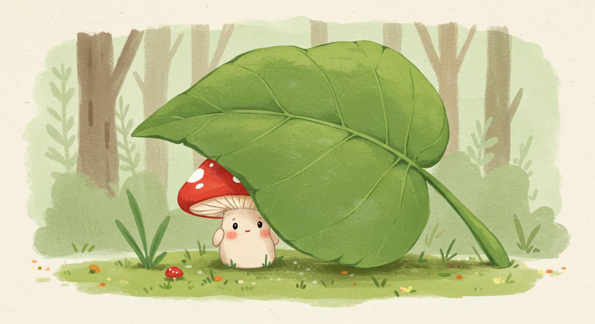
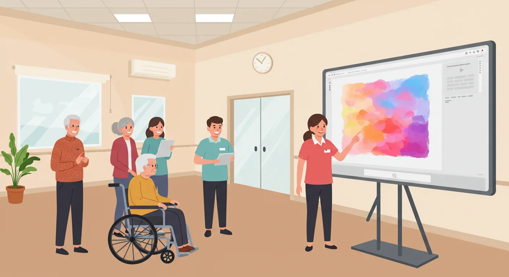

「頭の中のイメージを、形にしてみたい」
このページは、AIをあなたの創造的なパートナーとして、世界に一つだけの作品を生み出したいと願う、すべてのクリエイターのための総合案内所です。専門的なスキルは必要ありません。「創りたい」という情熱さえあれば、AIがあなたの翼となります。
① 言葉を紡ぐ（物語・文章創作）

プロンプト
小説執筆 (プロット・本文)
プロットから本文まで、AIと対話しながら物語を共同制作するための指示書です。

プロンプト
子供向け知育絵本
物語のプロット、本文、そして各シーンのイラスト用プロンプトまでAIと共同制作する指示書です。

プロンプト
AI読書感想文
AIとの対話を通じて子供の心の中から「書きたいこと」を引き出し、楽しく感想文を完成させます。

プロンプト
AI記事構成
長い文字起こしから、読者の心を掴む最も響く記事の構成案を3パターン提案・解説します。

プロンプト
AIキャッチコピー作成
ターゲットの深層心理を分析し、商品の魅力を最大限に引き出すキャッチコピーを共同制作します。

ブログ記事
【実践レポ】自作プロンプトでAI絵本を作ってみた
「知育絵本プロンプト」は本当に使える？制作者自ら、AIとの共同制作に挑戦した全手順を公開します。
② 視覚を彩る（イラスト・画像生成）

講座テキスト
【無料講座】画像生成AI入門
ImageFXやStable Diffusionを使い、簡単な言葉で思い通りの絵を描く方法を解説。あなたも今日からデジタルアーティストに。
プロンプト
AIイラスト生成 (Stable Diffusion)
簡単な日本語から高品質なイラスト用プロンプトを生成させるための、AIへの指示書です。

プロンプト
AIイラスト生成 (ImageFX)
日本語の簡単なイメージから、情景が浮かぶような美しい英文プロンプトを生成する指示書です。

ブログ記事
【中級編】プロンプトを改造して個性的な絵本を作る方法
プロンプトの設計図を理解し、主人公や絵のタッチなどを自由自在に改造する4つのテクニックを解説します。

ブログ記事
【コストゼロで実現】福祉施設のレクリエーションが変わる！
予算やアイデア不足に悩むレク担当者様へ。PC一台で始められる「AIお絵かき」「AI作曲」の具体的なやり方を解説します。
③ 音を奏でる（作詞・作曲）

プロンプト
AI楽曲制作 (Suno AI)
テーマを伝えるだけで、作詞と曲のスタイルをAIに提案させるための基本指示書です。

プロンプト
Suno AIプロンプト V2 (対話・高機能版)
曲の構成からボーカル、韻の踏み方まで細かく指定可能。AIとの対話で、あなたの理想の一曲を創り上げます。